AI VISUAL DESIGN · BLENDER MOTION · CONTENT COMMUNICATION
AI视觉设计师 · AI辅助编程实践者
以AI视觉生成、三维动态和传播理解为核心的复合型创作者
AI Visual Projects
与华为合作的校企项目。结合云南民族文化，探索AI动态视觉在移动端壁纸中的应用。建立民族视觉风格体系，适配HarmonyOS动态场景，提升年轻用户审美体验。
山茶花、民族纹样、花瓣结构、自然植被
东方幻想 · 柔和色彩 × 动态感 · 中心构图 · 半透明材质 · 冷暖渐变
Reference → ControlNet → Stable Diffusion → Style Control → Blender → Render
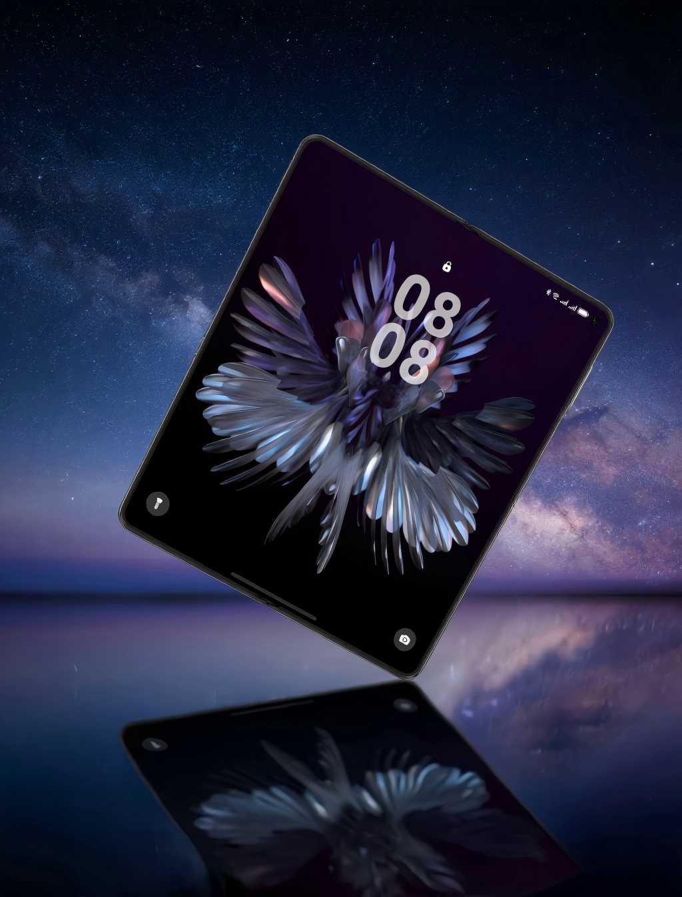
主视觉 · 手机端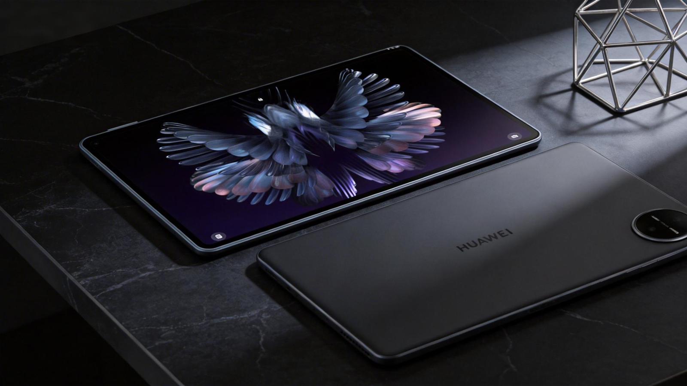
折叠屏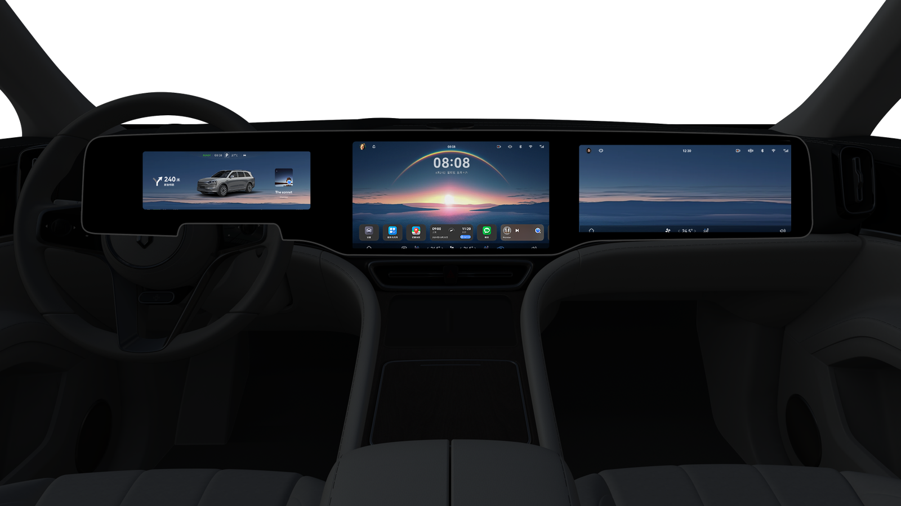
桌面场景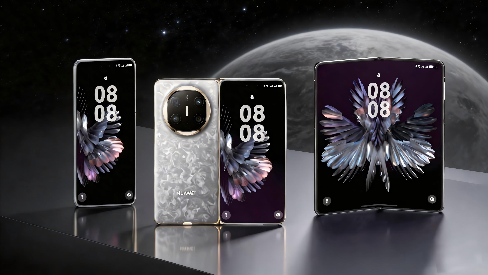
车机延展悬停设备查看详情 · 点击放大播放 · 视频自动循环
"AI提高的是前期探索效率；真正决定完成度的，仍是后续的风格判断、动态制作与场景适配。"
通过AI建立光弧、地平线、夜景等视觉方向。保留低饱和深蓝背景与柔和光感，降低界面干扰。验证横向构图、多屏延展和品牌质感。
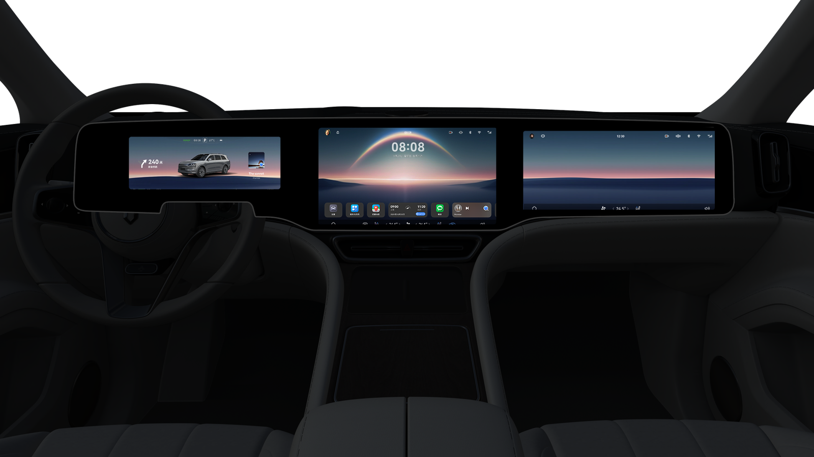
AI初稿探索Motion Video Projects
以山茶花为视觉母题，构建适配多终端的动态视觉方案。文化意象转化 × 动态壁纸表达 × 移动端场景适配。
宇宙星空与环形星体建立寰宇背景
由手机特写到折叠屏展开，再到多设备组合
蓝紫羽翼形态 + 中心对称构图
黑灰底与蓝紫高光强化未来感
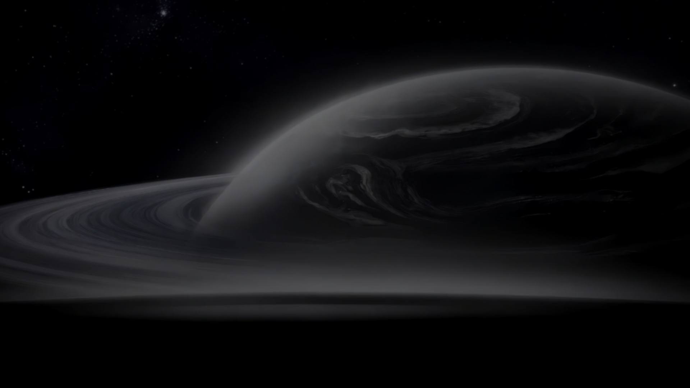
18s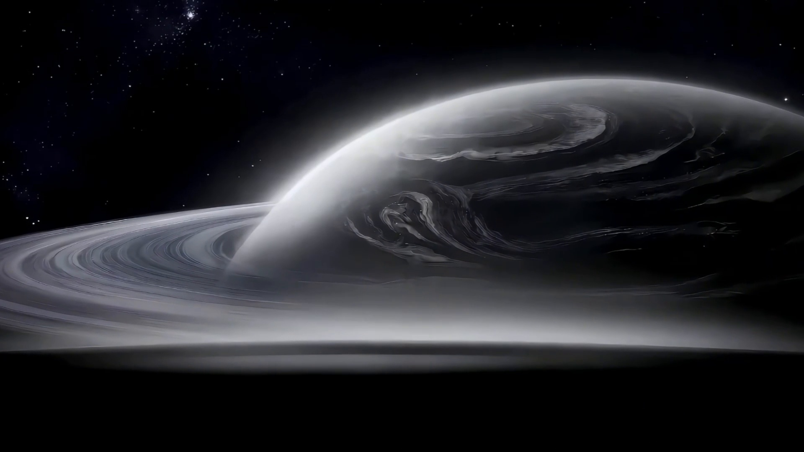
20s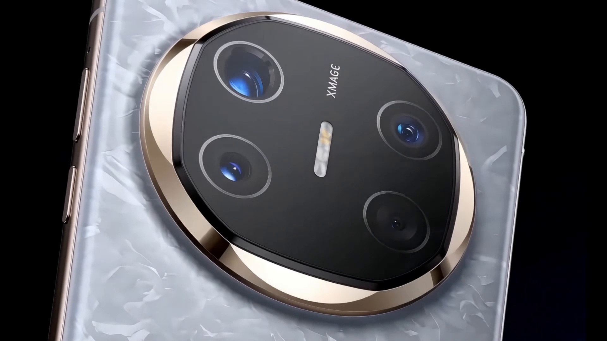
26s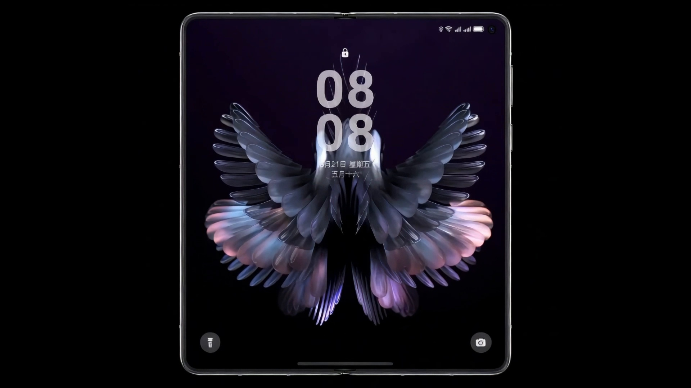
30s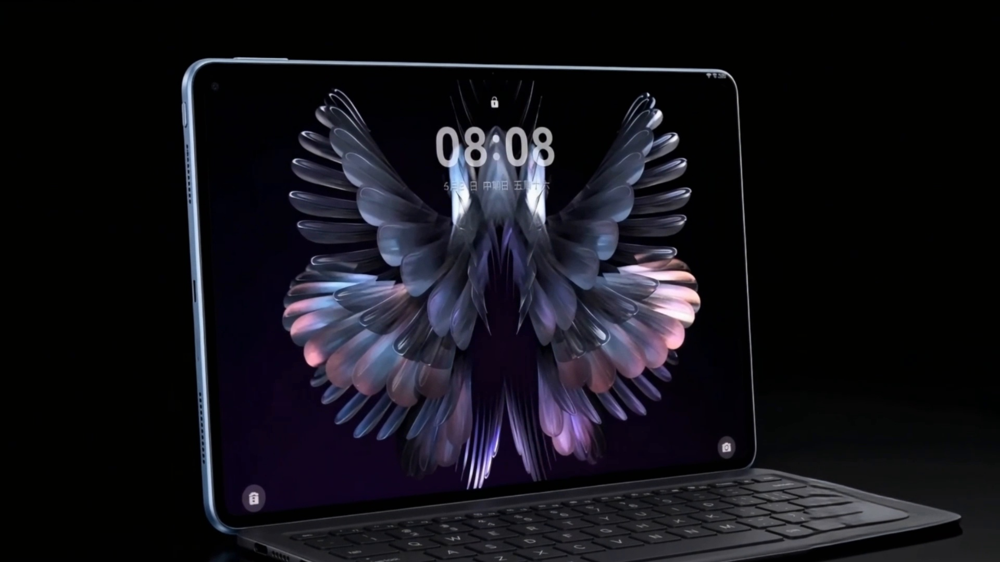
34s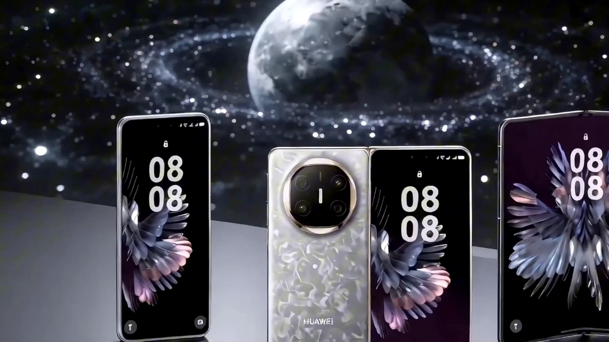
39s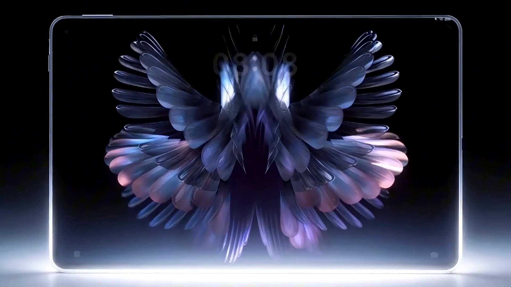
40sPlatform Content Strategy
同一份视觉内容，在不同的平台上需要不同的包装方式。 让作品不仅完成表达，也更适合被看见、被理解和被传播。
用户主动找壁纸、教程、灵感。标题与标签要清晰，画面要有辨识度。
点击翻转 →不只是好看，还要可搜索、可理解、可收藏。壁纸、Prompt、合集更适合传播。
前3秒抓人，动态展示强化吸引力。适合强动态视觉与快速转场。
点击翻转 →前3秒用高对比画面迅速建立视觉主体，动态转场比静态更适合推荐流。
注重信息量与完整过程。适合工作流拆解、教程、系列内容。
点击翻转 →用户想看过程和思考，适合把AI工作流完整展示，建立专业信任。
熟人信任与可转发性。适合成品展示、轻量传播、品牌感内容。
点击翻转 →重视直观成果和品牌质感，适合最终成品展示和轻量视觉传播。
用户需求 → 内容类型 → 视觉卖点
视觉主体 + 标题层级 + 风格统一
首图吸引 → 第二张呈现价值
关键词 / 标签 / 互动引导
点击 / 收藏 / 评论 → 优化建议
Creative AI Lab · 角色 / 分镜 / IP视觉
使用 ChatGPT image2 等AI工具进行角色视觉、广告IP和视频分镜的创意探索。 以下作品展示AI辅助创意从概念到可视化的完整过程。
ChatGPT image2 / Midjourney / 可灵 — 完整创意过程展示，含成果图、过程迭代与个人思考
Interactive Tools
AI Creative Engine · DeepSeek × ChatGPT × Seedance
基于 DeepSeek API 开发的全栈 AI 创意工具。输入粗略想法，AI 自动扩写为专业级图像提示词、视频分镜脚本或品牌设计简报，可直接对接 ChatGPT、Seedance 2.0 等工具完成视觉与音视频落地。
粗略想法 → 专业级AI绘图提示词。输出写实摄影、数字艺术、电影感三种风格版本，含参数建议。
创意概念 → 完整分镜脚本。包含画面描述、运镜、光线、音效，可直接导入 Seedance 生成视频。
品牌需求 → 视觉创意方案。输出色彩方案、字体建议、创意概念和 AI 工具落地路径。
创意生成 · 策略策划
视觉图形生成
音视频内容生成
多模态创意输出
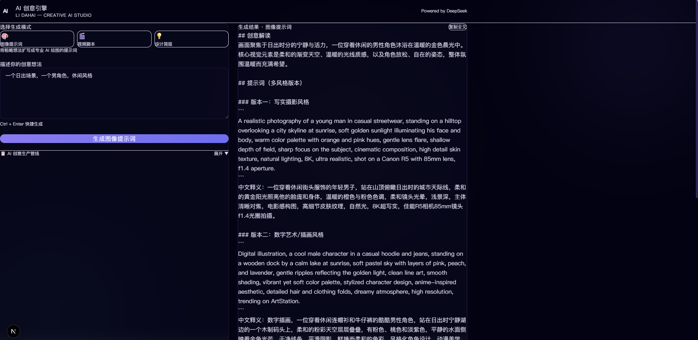
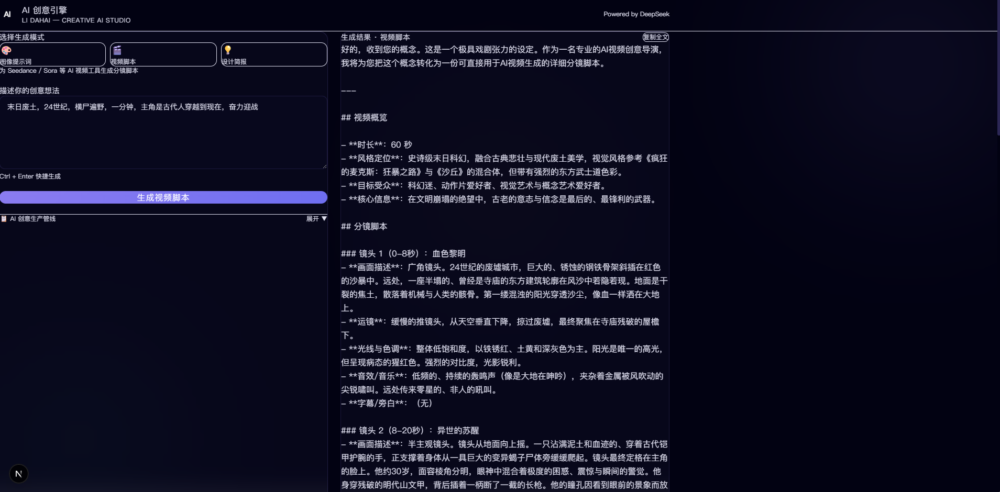
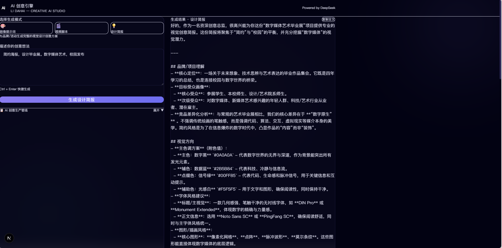
Next.js + TypeScript + DeepSeek API · 双击即启动
About Me · AI视觉设计师 × AI编程实践者
我是李大海，最初像许多设计同学一样，用Midjourney和可灵生成视觉素材——但我不满足于"生成即交付"。我开始追问：AI视觉如何真正落地到产品和场景中？这个追问带我走进了Blender三维制作，又带我走进了AI辅助编程的世界。
在零编程基础的情况下，我通过AI协作从零学会了HTML/CSS/JavaScript，独立搭建了你现在看到的这个作品集网站——包括动态壁纸预览、Prompt卡片生成器、交互式工作流节点图和色彩析出工具等交互应用。更进一步，我使用 Next.js + TypeScript + DeepSeek API 独立开发了「AI 创意引擎」全栈 Web 应用，实现从创意输入到专业提示词/脚本/方案的全自动生成管线。这不仅是技术能力的证明，更代表我作为"AI Native创作者"的工作方式：用AI拓展边界，用编程实现想法，用设计审美把关输出。
数字媒体艺术 · 本科 · 2026届
Midjourney · 可灵Kling · Stable Diffusion · ComfyUI
Blender 建模 · 动画 · 材质 · Cycles 渲染
海报 · 品牌视觉 · 动态壁纸 · 终端适配
封面包装 · 内容结构 · 小红书/抖音/B站策略
HTML/CSS/JS · Claude Code · 提示词工程
Next.js · TypeScript · React · Canvas · API对接 · 交互工具
作为一个零编程基础的数字媒体学生，我通过与AI（Claude Code）结对编程的方式，从零开始搭建了这个作品集网站。整个过程不是"AI帮我写代码"——而是"我和AI讨论设计方案、迭代视觉细节、调试交互逻辑"，我负责审美判断和产品决策，AI辅助实现。
从暗色蓝紫视觉主题的设计定调，到星空粒子Canvas背景的实现，到设备模拟框的CSS绘制，再到Median Cut算法的JavaScript实现——每一步都是AI辅助下从零学习、即时应用的结果。这个网站本身就是我"AI Native工作能力"的最佳案例。
建站过程截图（可放入对话截图、迭代版本对比等）
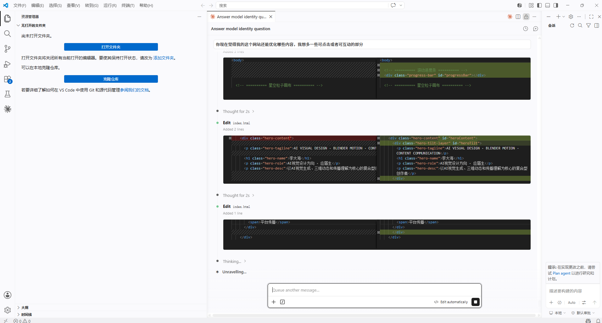
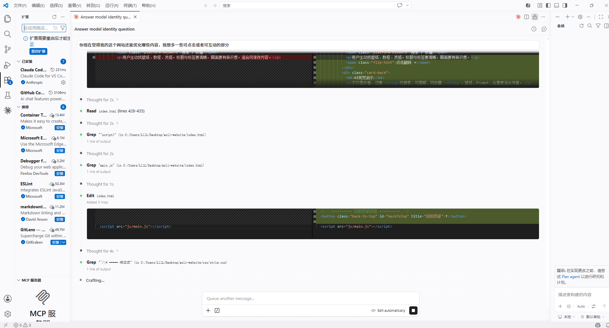
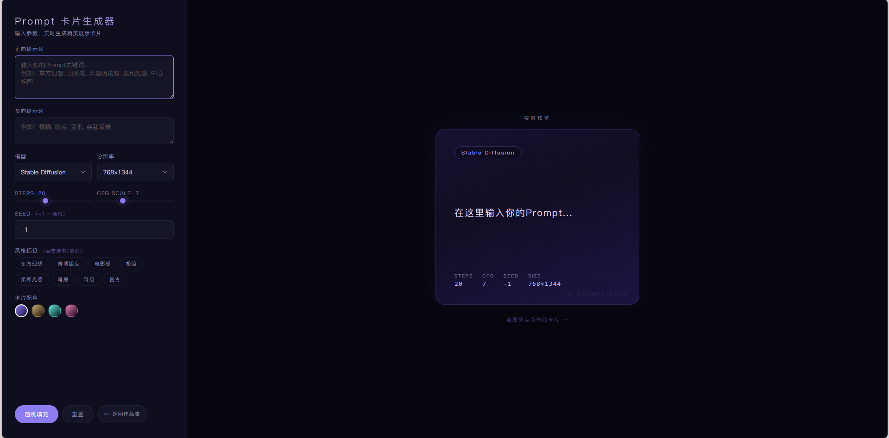
使用Midjourney、可灵、Stable Diffusion生成视觉内容，积累AI视觉审美和Prompt工程经验。
结合Blender三维制作，将AI生成的概念转化为可落地的动态视觉。完成华为动态壁纸、山茶花毕设等项目。
通过AI辅助编程掌握HTML/CSS/JS，独立开发交互式作品集网站和多个前端工具，拓展了创作的边界。
Workflow & Application
AI提升前期探索效率，Blender将静态概念转化为具有空间感和动态表现力的最终作品。
KV / 海报 / Campaign主视觉
动态壁纸 / AI短视频 / 平台视觉
产品氛围图 / 主图 / 详情页
角色设定 / 图案 / 周边视觉
Contact
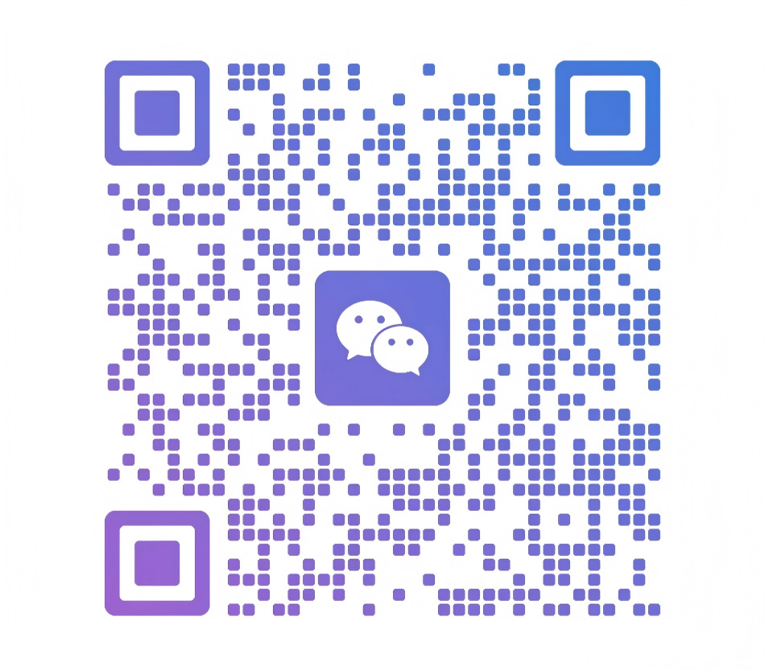
扫描二维码添加微信